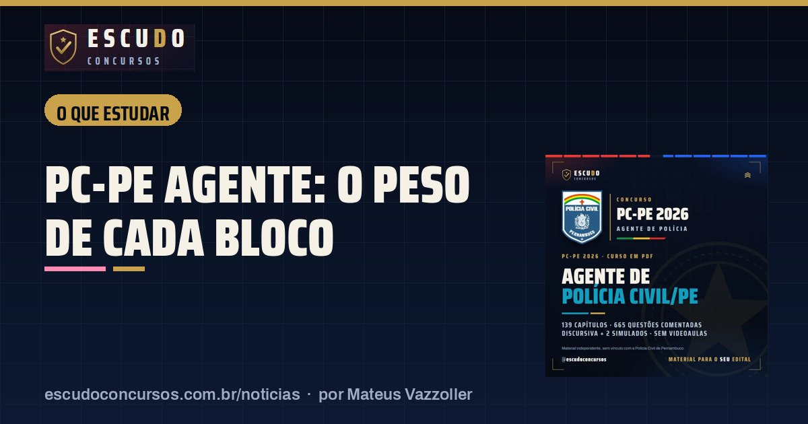

PC-PE Agente: o que estudar pelo peso de cada bloco na prova do Cebraspe
O que estudarPublicado em 19 de novembro de 2026 · por Mateus Vazzoller, ESCUDO Concursos

O Agente de Polícia Civil de Pernambuco disputa 90 pontos na primeira etapa, e o bloco de Direito vale só 20 deles. Os Conhecimentos Específicos (Português, Informática, Raciocínio Lógico, Contabilidade e Estatística) valem 40, e a redação sobre segurança pública vale 30. Quem estuda para a PC-PE como se fosse uma prova de Direito põe a maior parte das horas no bloco que menos pesa. Este guia mostra o peso de cada bloco e propõe uma semana de 15 horas para quem quer chegar à prova de 07/03/2027 já pensando como o agente que vai cumprir mandados e conduzir viatura pelas ruas de Pernambuco.
| Cargo | Agente de Polícia Civil de Pernambuco, 1.200 vagas, R$ 5.667,92 |
|---|---|
| Banca | Cebraspe, múltipla escolha com cinco opções, sem desconto por erro |
| Nota da primeira etapa | 90 pontos: 20 de Direito, 40 de Conhecimentos Específicos e 30 da redação |
| Para não ser eliminado | 30 pontos nas objetivas e 15 na redação |
| Prova | 07/03/2027 (domingo), à tarde |
| Inscrições | até 16/12/2026, às 18h; taxa de R$ 250,00 paga até 18/12/2026 |
Curso ESCUDO Agente de Polícia Civil de Pernambuco em PDF: 139 capítulos e 665 questões comentadas, Discursiva e 2 simulados, de acordo com o edital. De R$ 47 por R$ 37 com o cupom PCPE37 até 16/12/2026.
Ver o curso
Como os 90 pontos se dividem?
As objetivas e a discursiva são feitas no mesmo turno, em 4 horas, e a nota final da primeira etapa é a soma das três provas. Os exames médicos, o TAF, a investigação social e a avaliação psicológica só eliminam: quem define a ordem de classificação é esta conta.
| Prova | O que cobra | Pontos | Parte da nota |
|---|---|---|---|
| P1 | Noções de Direito: Legislação Estadual, Constitucional, Administrativo, Penal e Processual Penal | 20 | 22% |
| P2 | Conhecimentos Específicos: Língua Portuguesa, Informática, Raciocínio Lógico, Contabilidade Geral e Estatística | 40 | 44% |
| P3 | Redação dissertativa sobre segurança pública, até 30 linhas | 30 | 33% |
| Total | 90 |
Dois detalhes mudam a estratégia. Primeiro, a redação sozinha vale mais que todo o bloco de Direito. Segundo, só tem a redação corrigida quem fica entre os 7.200 melhores nas objetivas, então as 60 questões precisam vir antes de tudo.
Quanto cada matéria pesou na prova de 2023?
O edital não diz quantas questões cabem a cada disciplina dentro da P1 e da P2. A melhor pista é a prova de 2023, do mesmo cargo e da mesma banca. Ela serve de referência para dividir o tempo, e não de garantia para 2027.
| Bloco em 2023 | Questões | Horas por semana sugeridas |
|---|---|---|
| Contabilidade e Estatística | 15 | 3h |
| Informática e Raciocínio Lógico | 13 | 2h30 |
| Língua Portuguesa | 12 | 2h30 |
| Penal e Processo Penal | 10 | 2h30 |
| Constitucional e Administrativo | 6 | 1h30 |
| Legislação Estadual | 4 | 1h30 |
| Redação | 1 texto, 30 pontos | 1h30 |
| Total | 60 questões e a redação | 15h |
A Legislação Estadual ganha um pouco mais do que as suas 4 questões pediriam, porque são só cinco normas, cobradas na letra, e quem as estuda bem garante pontos que muitos candidatos deixam passar.
O que priorizar dentro de cada bloco?
Contabilidade Geral e Estatística. É o bloco mais pesado em 2023 e o mais estranho para quem vem de outras provas de polícia. Em Contabilidade, comece por patrimônio, atos e fatos administrativos e lançamentos, porque balancete, balanço patrimonial e DRE dependem deles. Em Estatística, as medidas de posição e dispersão vêm antes da probabilidade condicional e da amostragem. Os dois pedem conta feita à mão: a prova não permite calculadora.
Informática e Raciocínio Lógico. Informática cobra Windows, Microsoft 365, redes, navegadores e segurança. Em Raciocínio Lógico, o programa vai de razões e proporções até lógica sentencial e de primeira ordem; treine os dois lados, conta e lógica.
Língua Portuguesa. Interpretação, coesão, concordância, regência, crase e reescrita de frases. O que se estuda aqui também tira erros da redação, que custam ponto.
Penal e Processo Penal. O maior bloco da P1. Além dos crimes do Código Penal e das leis especiais (hediondos, abuso de autoridade, tortura, Maria da Penha, drogas, organizações criminosas, Lei Henry Borel), o Edital nº 2, de 15/10/2026, incluiu o Estatuto da Juventude (Lei nº 12.852/2013) no programa de Direito Penal. Em Processo Penal, inquérito policial, prisões e medidas cautelares são o dia a dia de uma delegacia.
Constitucional e Administrativo. Direitos e garantias, organização do Estado e segurança pública na Constituição; atos, poderes, agentes públicos e improbidade.
Legislação Estadual. Constituição de Pernambuco (artigos 101 a 105-B), Estatuto do Policial Civil (Lei nº 6.425/1972), Estatuto do Servidor do Estado (Lei nº 6.123/1968), Lei Complementar nº 137/2008 e Lei Complementar nº 317/2015. São as regras da carreira que o futuro agente vai viver por dentro.
Por que a redação merece horário fixo?
A nota da redação é NPD = NC − 6 × NE ÷ TL: a nota de conteúdo, até 30, menos 6 vezes o número de erros dividido pelo número de linhas escritas. Com 30 linhas, cada erro custa 0,2 ponto; com texto mais curto, cada erro pesa mais. Abaixo de 15 pontos, o candidato está eliminado. Escreva uma redação por semana sobre um tema de segurança pública em Pernambuco, conte os seus erros e reescreva o texto corrigido.
Como fica a régua para não ser eliminado?
| Exigência | O que o edital pede |
|---|---|
| Objetivas | 30 dos 60 pontos, sem mínimo por prova nem por disciplina |
| Corte para correção da redação | estar entre os 7.200 melhores classificados, por sistema de concorrência |
| Redação | 15 dos 30 pontos |
Como questão errada ou em branco vale zero, sem desconto, marque todas as 60. O curso ESCUDO para Agente da PC-PE segue esse mesmo programa, com questões no formato de cinco opções do Cebraspe e bloco de redação, e está em PC-PE Agente 2026.
Curso ESCUDO Agente de Polícia Civil de Pernambuco em PDF: 139 capítulos e 665 questões comentadas, Discursiva e 2 simulados, de acordo com o edital. De R$ 47 por R$ 37 com o cupom PCPE37 até 16/12/2026.
Ver o curso
Perguntas frequentes
Qual matéria pesa mais na prova de Agente da PC-PE?
Pelos pontos, os Conhecimentos Específicos, com 40 dos 90. Pela prova de 2023, o bloco de Contabilidade e Estatística foi o que teve mais questões, 15.
A prova da PC-PE tem desconto por erro?
Não. Cada questão vale 1 ponto, e questão errada, em branco ou com dupla marcação vale zero. Por isso, vale marcar todas.
O Estatuto da Juventude cai na prova de Agente?
Sim. O Edital nº 2 PCPE, de 15/10/2026, incluiu a Lei nº 12.852/2013 no programa de Noções de Direito Penal do Agente e do Escrivão.
Leia também
- Rotina de estudosCronograma de estudos PC-PE Agente: 14 semanas até a prova de 07/03/2027
26 de novembro de 2026 · Plano de 14 semanas até a prova do Cebraspe de 07/03/2027 para Agente da PC-PE: 15 horas por semana, Contabilidade cedo e redação toda semana.
- O que estudarO que faz o Técnico Bancário do Banestes: as 24 atribuições do edital e o que elas cobram na prova da FCC
25 de novembro de 2026 · As 24 atribuições do Técnico Bancário do Banestes no edital, a jornada de 30 horas, o salário de R$ 4.552,43 e o que cada tarefa do cargo cobra na prova da FCC.
- O que estudarIBGE Recenseador: o que estudar para a prova da Cesgranrio, com metade dos pontos na apostila do Censo Agro
17 de novembro de 2026 · O que estudar para Recenseador do IBGE: Conhecimentos Técnicos valem metade das 60 questões, o que cortar do edital de 2021 e a semana de estudo pelo peso.
Guia completo do concurso: edital, vagas e o que cai · Mais notícias e dicas de concursos